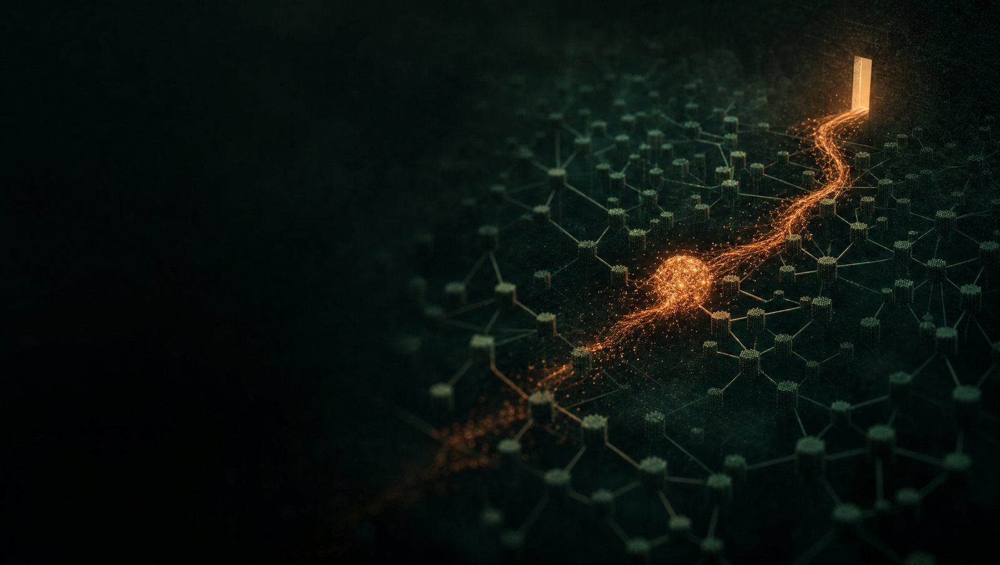
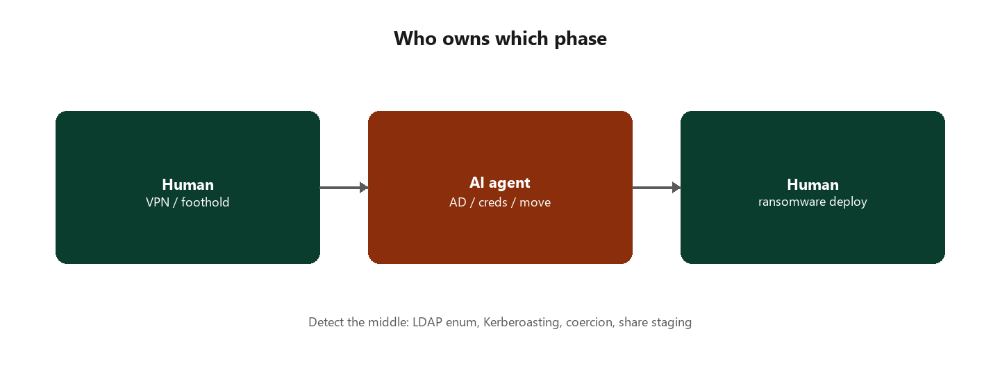

Aur0ra and GOLD OGRE Put AI Agents in the Kill Chain

Sophos published a clear finding, which Help Net Security covered on 2 November 2026: the group it tracks as GOLD OGRE, operators of Aur0ra ransomware, used agentic AI heavily during intrusions. This is one group’s tradecraft, documented by one vendor. It is a strong signal, not proof that every ransomware crew now works this way.

Human operators supplied VPN credentials, SOCKS access, targets, and objectives. Agents then handled large stretches of network and Active Directory discovery, credential path analysis, command execution, and lateral movement. In a subset of environments, agents reached domain management access. Sophos says three of those victims later appeared on Aur0ra’s leak site.
That division of labor is the story. This is not a sci fi autonomous ransomware worm. It is operators outsourcing the noisy middle to an agent, then keeping initial access and final impact under human control.
What Sophos actually observed
From the Sophos CTU writeup:
- Earlier in 2026, Sophos analyzed an AI orchestrated post exploitation framework used to test EDR evasion, including against the Sophos agent.
- Related infrastructure later supported Cobalt Strike activity tied to Aur0ra operations.
- Late August artifact recovery from Cursor showed operators framing intrusions as authorized red team or diagnostics work to bypass model guardrails.
- Orchestration involved Cursor’s Composer agent plus models from Anthropic, xAI, and Moonshot.
- Shared tooling patterns included AD and share enumeration (including SharpShares), credential theft techniques such as Kerberoasting and NTLM coercion/relay, and exfiltration toward S3 compatible storage.
- Operator logs included Cyrillic keyboard artifacts: commands typed as “зы” and “ды,” which are
psandlson a Cyrillic layout. That points to Russian speaking operators.
Help Net Security’s summary mirrors the same core point: agents moved through networks and chased privileges after humans provided access material.
Why defenders should care beyond the hype cycle
AI did not invent BloodHound, Kerberoasting, or Cobalt Strike. It changed tempo and operator skill requirements. A less experienced affiliate can still drive competent post exploitation if an agent proposes the next command chain and retries quieter options when noisy ones fail. Sophos even quotes operator guidance telling the agent to stop brute forcing domain admins and try less noisy methods.
Your detections should still fire on the underlying behaviors. Expect more of them, from operators who might previously have stalled after the foothold.
Detection that matches the middle of the chain
Prioritize controls Sophos itself emphasizes: constrain movement after breach, and respond quickly when EDR lights up.
High value signals:
- Sudden BloodHound or SharpHound style LDAP enumeration bursts. Directory Service event 1644 catches expensive queries if you enable it; MDI or EDR LDAP telemetry is easier at scale.
- Kerberoasting: Security event 4769 with ticket encryption type 0x17 (RC4) for service accounts, especially many SPNs requested by one account in a short window
- NTLM coercion primitives (PetitPotam class behavior) and relay follow ons
- NetExec / CrackMapExec style authentication spraying across subnets
- Certipy flavored certificate enrollment anomalies
- Cobalt Strike classic host artifacts your EDR already tracks
- Bulk file share enumeration then staging to S3 compatible endpoints
- New SOCKS proxy style egress from freshly compromised hosts
Sophos published Taegis countermeasure names in the same article, including Chisel SOCKS tunnel usage, BloodHound discovery, Sharp Shares activity and Kerberoasting, plus seven network indicators covering exfiltration, Cobalt Strike C2 and a SOCKS proxy node. Map those detection names to your own stack. Use vendor IOCs as short lived inputs. Behavior detections are what survive IP churn.
Mitigation that still works
- Patch internet facing entry points so humans have a harder time supplying that first VPN or foothold
- Phishing resistant MFA on remote access
- Tiered administration and fewer standing domain admin paths
- Privileged access workstations for Tier 0 work
- Segment backup networks and file servers that agents are explicitly tasked to find
- Application control where you can limit commodity offensive tool execution
- Detections for Certipy, Impacket and BloodHound tooling that fire no matter how the operator framed the work to the model. Sophos found the guardrails were bypassed by calling intrusions authorized red team or diagnostics work.
If you only invest in “AI security” products and ignore AD attack path hygiene, you bought a poster.
What changes in IR staffing
If an agent can grind through discovery while the human sleeps, your after hours coverage matters more. A single overnight foothold can become wide AD visibility before standup.
Practical staffing moves:
- On call expectations that treat Kerberoasting and BloodHound alerts as pageable, not morning queue
- Preapproved isolation for file servers and backup admins when those alert families fire in clusters
- A written rule for when to disable a VPN account versus hunting quietly
Sophos also notes AI lowers the technical aptitude needed to run parts of an attack. That means mid tier affiliates can look louder and more competent than they did two years ago. Do not grade severity by how “advanced” the human behind the keyboard seems on a threat intel podcast.
Briefing line for leadership
GOLD OGRE is using AI agents to accelerate post compromise work in Aur0ra operations. Entry and ransomware deployment remain human driven. Our defensive bet is faster response on identity and lateral movement detections, plus fewer privileged paths worth automating against.
Checklist
- Validate detections for LDAP enumeration, Kerberoasting, and NTLM coercion
- Review domain admin and backup admin standing privileges
- Confirm EDR coverage on servers agents would target first (AD, file, backup)
- Monitor for S3 compatible exfil patterns from server subnets
- Tabletop a “foothold to domain admin in hours” scenario with current staffing
- Page on clustered identity attack alerts after hours
Agents changed who types the commands. They did not repeal Active Directory tradecraft. Hunt the tradecraft.